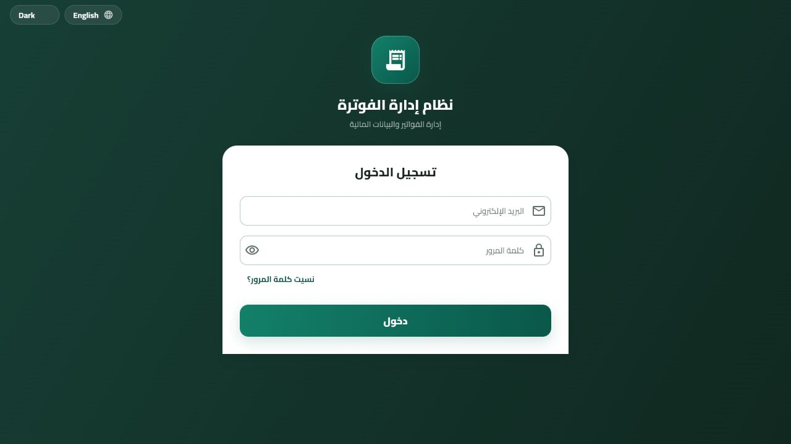
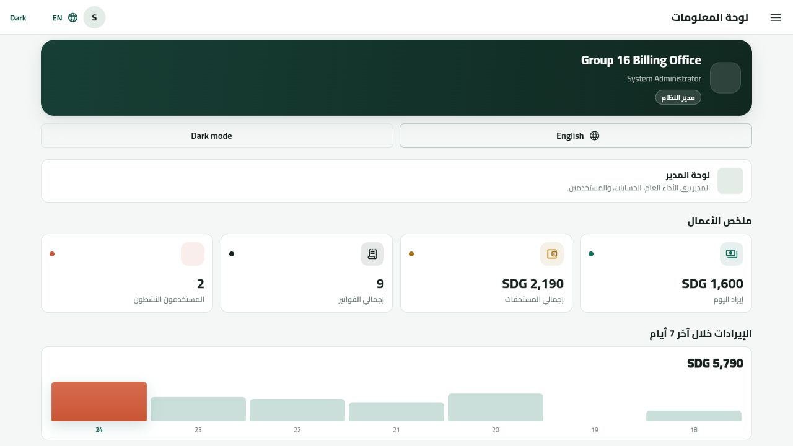
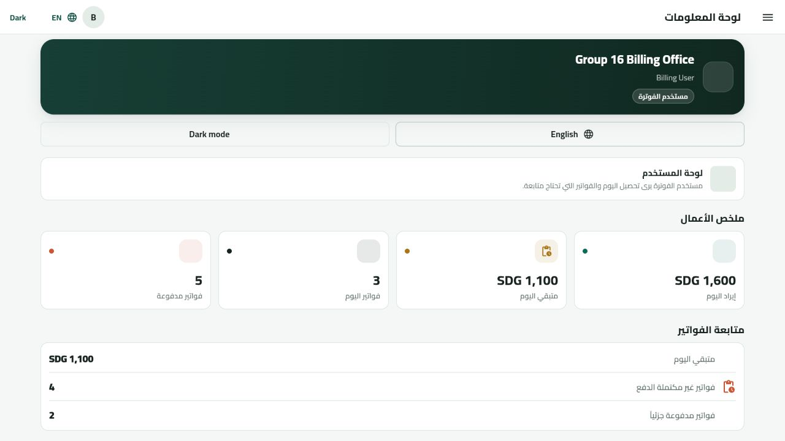

بالعربي السوداني
المشروع اسمو Billing Management System. هو نظام فوترة عام بيساعد في تنظيم الفواتير والمدفوعات والمستخدمين، وبيدي ملخص سريع للوضع المالي.
في المناقشة الاولى ما حنشرح كل النظام. حنركز بس على صفحتين: تسجيل الدخول ولوحة المعلومات.
Discussion 1 | Group 16
A bilingual first-discussion guide for the capstone project. The focus is only on the Login page and the Admin/User Dashboard.

Project Idea
المشروع اسمو Billing Management System. هو نظام فوترة عام بيساعد في تنظيم الفواتير والمدفوعات والمستخدمين، وبيدي ملخص سريع للوضع المالي.
في المناقشة الاولى ما حنشرح كل النظام. حنركز بس على صفحتين: تسجيل الدخول ولوحة المعلومات.
The project is a general Billing Management System that helps organize invoices, payments, users, and financial summaries.
Discussion 1 focuses only on two pages: the Login page and the Dashboard.
login_screen.dart
dashboard_screen.dart


المدير بشوف ملخص عام وادارة مستخدمين. المستخدم العادي بشوف متابعة الفواتير اليومية فقط. لو المستخدم حاول يدخل لوحة المدير، النظام يرجعو للوحة المستخدم.
Admin sees management and overall summaries. A normal user only sees daily invoice follow-up. If a user tries to open the admin page, the app redirects them back to the user dashboard.
Dashboard Numbers
الارقام ما عشوائية. هي محسوبة من بيانات فواتير تجريبية عشان نثبت الفكرة في Discussion 1.
Study Script
Ready Answers
This is Discussion 1, so the scope is only the foundation: Login, role control, and Dashboard.
Because permissions are different. Admin manages the system, while User follows daily invoices.
They are calculated from invoice records, not hard-coded random values.